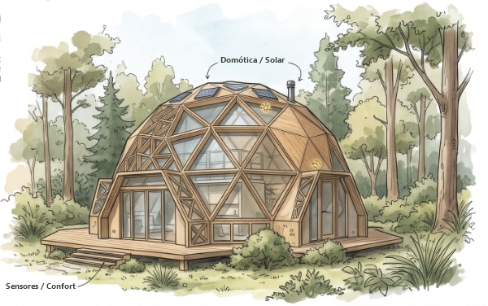
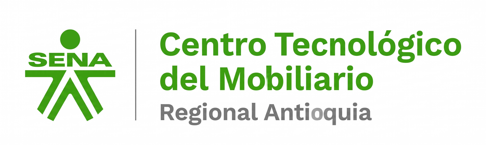
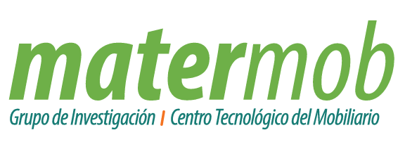
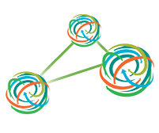
Competitividad & Desarrollo Tecnológico Productivo
Geodome Smart: Alojamiento Ecoturístico Inteligente con Gemelo Digital Integrado
CONTENIDO Estructura Oficial · 20 Minutos
1. Objetivo General, Específicos y Problema Central
2. Impacto del Proyecto (Programas y Planta)
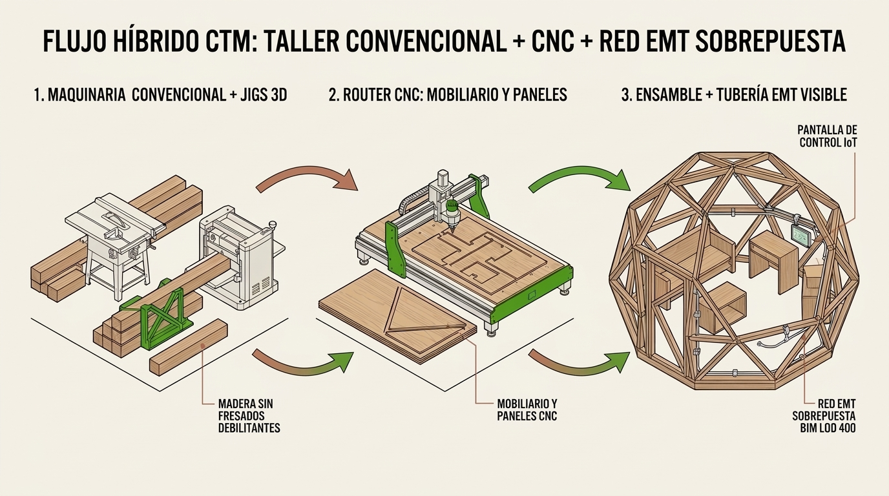
3. Productos Generados y Ruta INTERZUM
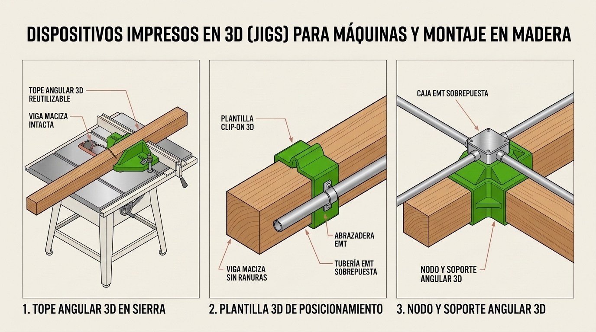
01. Objetivos
Geodome Smart: Alojamiento Ecoturístico Inteligente con Gemelo Digital Integrado
Desarrollar un modelo de operación inteligente para infraestructuras ecoturísticas modulares mediante la integración de flujos de fabricación digital y sistemas de domótica abierta, orientado a fortalecer las competencias técnicas en Construcción 4.0 y optimizar la eficiencia operativa en alojamientos sostenibles.
Caracterizar las variables de diseño estructural de marcos rígidos y los requerimientos técnicos de automatización (IoT), mediante el análisis de comportamiento de cargas y la evaluación de protocolos de hardware abierto, para definir los parámetros técnicos de integración en la infraestructura modular.
Diseñar un modelo de infraestructura inteligente basado en flujos de trabajo BIM, que articule la fabricación digital (CNC) con una arquitectura abierta de domótica (IoT), estableciendo los protocolos técnicos para la integración nativa de sensores y actuadores en marcos rígidos de madera.
Prototipar una unidad ecoturística funcional, implementando el modelo de operación inteligente y el gemelo digital para validar, en entornos controlados, la gestión autónoma de variables críticas y la viabilidad de transferencia tecnológica al sector productivo y académico.
01. Objetivos & Problema Central Por Qué Ruteo EMT Sobrepuesto (Sin Fresar la Madera)
“Carencia de un modelo de integración paramétrica (BIM) para el ruteo e instalación de redes tecnológicas sobrepuestas en marcos rígidos de madera, lo que genera desarticulación técnica en la fabricación híbrida y restringe la viabilidad constructiva de alojamientos ecoturísticos inteligentes.”
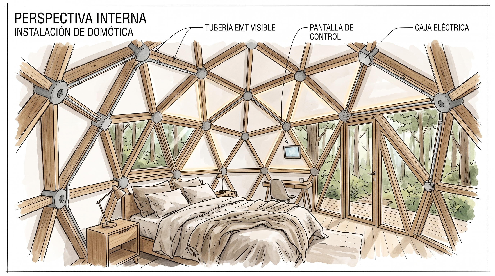
02. Impacto Diseño Curricular: Carpintería + Ebanistería + Domótica (Línea de la Madera)
Geometría Geodésica y Conservación de Fibra
Mobiliario Inteligente Adaptado al Domo
Despliegue EMT Superficial + Home Assistant
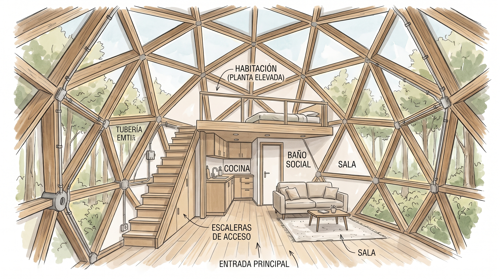
02. Impacto Nuevos Procesos BIM (LOD 400) para Ruteo EMT y Madera Convencional

02. Impacto Capacidad Instalada: Taller Convencional + CNC + Red EMT Sobrepuesta
02. Impacto Hibridación Impresión 3D: Maquetas, Jigs de Máquina y Soportes EMT
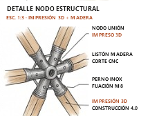
03. Productos desarrollados o potenciales Prototipos · Informes · Normas · Catálogos · Eventos
Prototipo en Madera + Jigs 3D + Red EMT
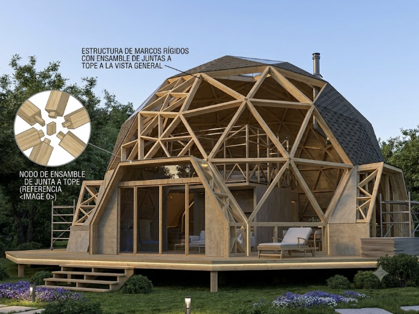
Orquestación BIM + Gemelo Unity VR 1:1
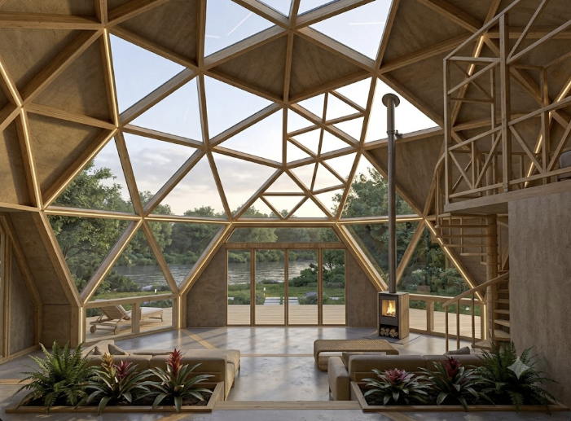
Estándares Técnicos y Feria INTERZUM
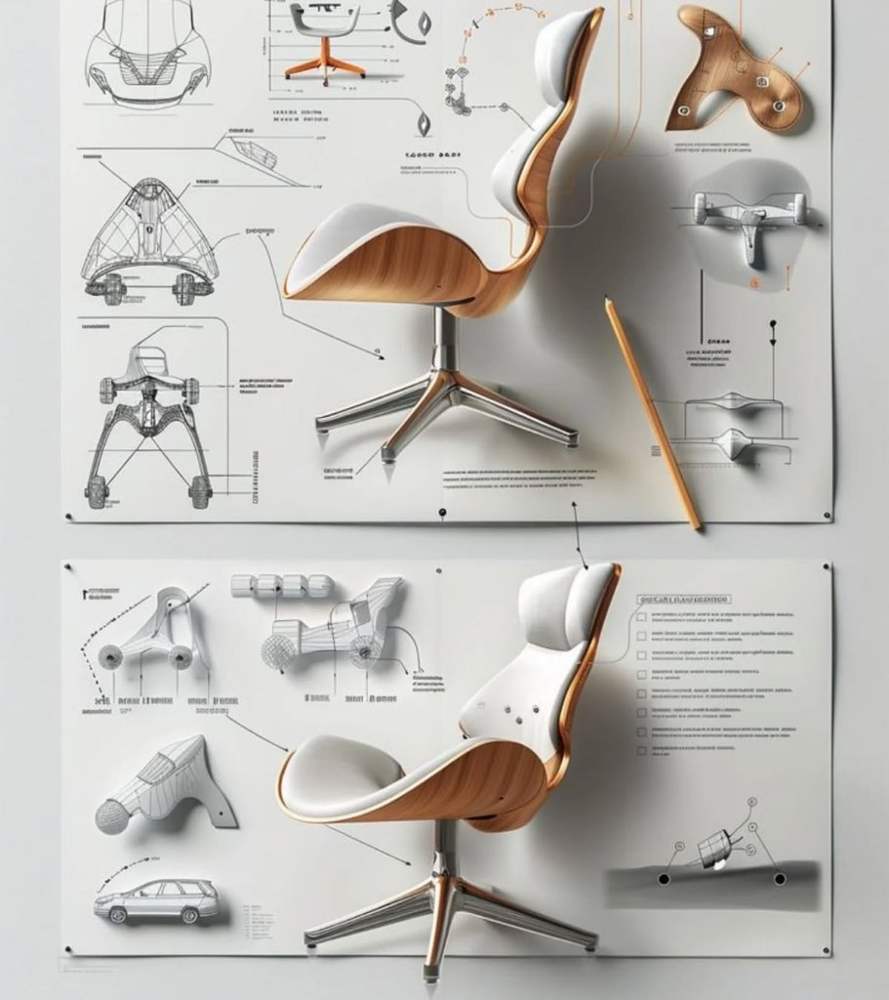
03. Productos desarrollados o potenciales Cronograma Gráfico y Ruta de Producción hacia INTERZUM 2028
DEV-01 · DEV-02
DEV-03 · DEV-05 · DEV-06
DEV-04 · DEV-07
DEV-08 · DEV-11
DEV-09 · DEV-10 (Convencional + CNC + EMT)
DEV-12 · DEV-13 · DEV-14